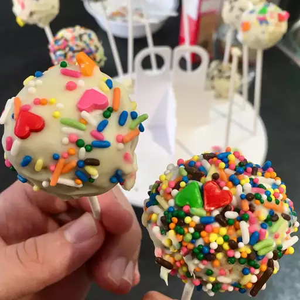

Cake Balls

Description of Cake Balls
Cake balls are the shizzzzzz, Buc-ee's cake balls made the trips to Austin or down i35 bearable.
Every damn time we'd drive by, wed have to stop and get the box of 9, not the small box, the HUGE ass box.
Also, funny story with Amadeo supplying Dereck's wedding with cake balls but some shit went down.
So then Deo somehow manages to work his magic and get cake balls from a local bakery the day of.
Ingredients
- cooking spray
- 1 (15.25 ounce) package chocolate cake mix
- 1 cup water
- 3 large eggs
- ⅓ cup vegetable oil
- (16 ounce) container prepared chocolate frosting
- 1 (3 ounce) bar chocolate flavored confectioners coating
Directions
- Preheat the oven to 350 degrees F (175 degrees C). Grease a 9x13-inch baking dish with cooking spray.
Line a baking tray with waxed paper.
- Blend cake mix, water, eggs, and oil in a large bowl with an electric mixer at low speed until moistened,
about 30 seconds. Beat at medium speed for 2 minutes.
Pour batter into the prepared baking dish.
- Bake in the preheated oven until a toothpick inserted into the center of cake comes out clean, 26 to 31 minutes.
Let cool enough to handle.
- Crumble warm cake into a large bowl; stir in frosting until well blended.
Use a melon baller or small scoop to form chocolate cake mixture into balls and place them on the prepared baking tray.
Place in the freezer until cake balls are chilled, about 15 minutes.
- Melt chocolate coating in a glass bowl in the microwave or a metal bowl over a pan of simmering water,
stirring occasionally until smooth.
- Dip cake balls in melted chocolate using a toothpick or fork to hold them.
Return to the tray to set.
Nutrition Facts
- Calories - 124
- Carbs - 20g
- Fat - 5f
- Protein - 1g
Take me back to recipes page